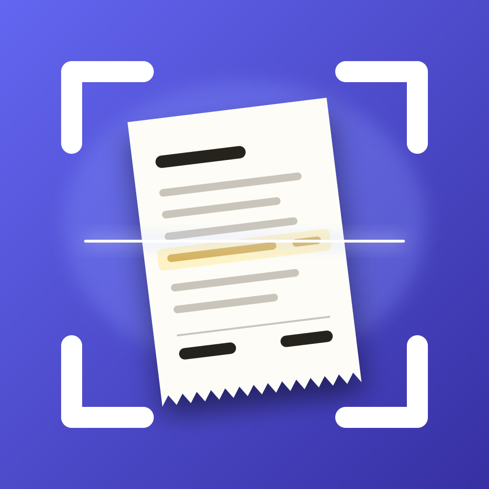

A mobile app for iPhone and Android that turns a receipt into an itemised, categorised record of what you spent.
You can create an account with an email address or sign in with Google. When you sign in with Google, the app receives your name and email address to identify your account. It does not request access to any other data in your Google Account.
Receipts you scan are stored privately against your account. How information is collected, used and deleted is set out in the Privacy Policy; the rules for using the app are in the Terms of Use.
Reading receipts with AI is a paid feature, offered as an auto-renewing subscription through the App Store and Google Play. Receipts you have already filed stay available to you.